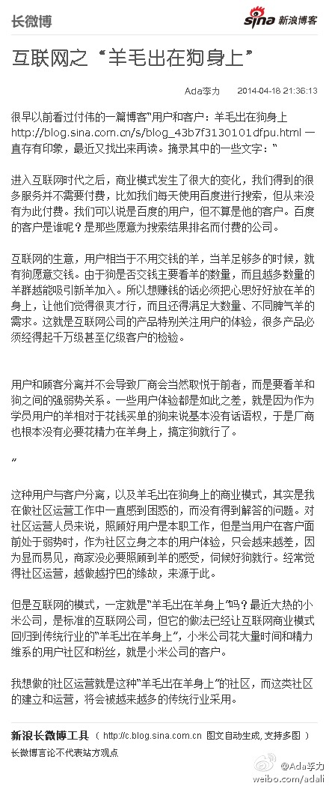

尝试解释下：对技术社区来讲，技术人员是羊，大IT厂商是狗，而上IT系统的大企业是猪。是这样吧？//@刘松--甲骨文: 标准说法是：羊毛出再狗身上，猪来付钱；最难是找到“猪”@Ada李力:互联网之“羊毛出在狗身上”：很早以前看过付伟的一篇博客“用户和客户：羊毛出在狗身上 网页链接 一直存有印象，最近又找出来再读。摘录其中的...文字版>> 网页链接 （新浪长微博>> 网页链接） 

 //@刘松--甲骨文: 标准说法是：羊毛出再狗身上，猪来付钱；最难是找到“猪”
//@刘松--甲骨文: 标准说法是：羊毛出再狗身上，猪来付钱；最难是找到“猪”